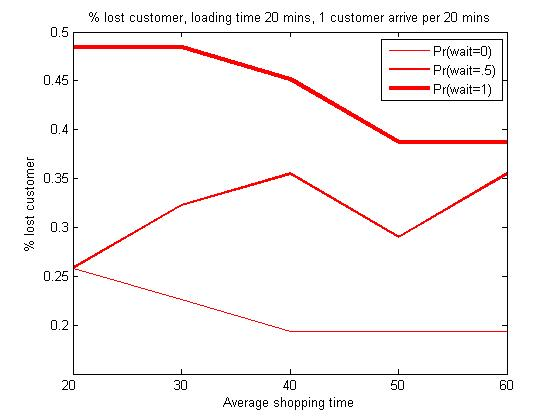
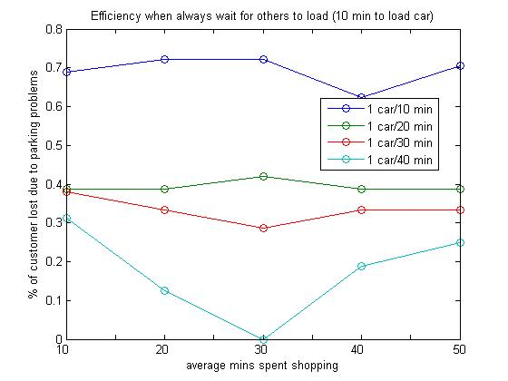
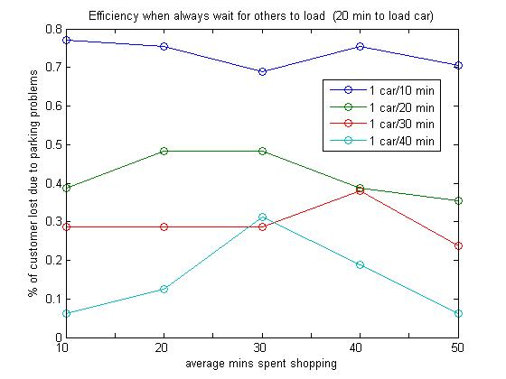
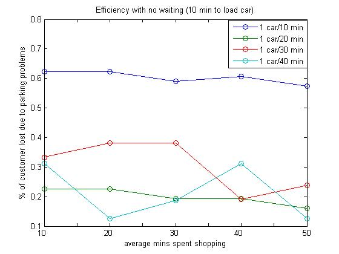
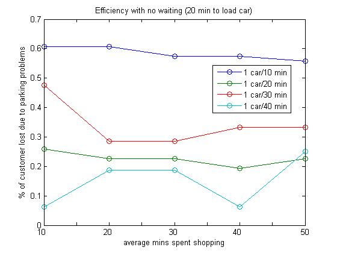

Research Question The Model The Results Possible Extensions
This first graph shows the percentage of customers lost to parking problems in a 10 hour (600 minute) day given shopping time between 20 to 60 minutes. For this simulation, customers arrive every 20 minutes. It takes 10 minutes from the time a customer appears in the parking lot after shopping (and becomes visible to a car searching for parking) to the time they are ready to back out.
The model suggests that the tendency to wait increases the percentage of lost customers due to a blocked entrance of the parking lot. Interestingly shorter shopping time does not always lead to fewer lost customers.
The frequency of cars backing out of the lot increases the percentage of time that a road is blocked either by the car itself, or by other cars that are eyeing its spot. This is particularly acute when shoppers take a long time to load their car and the majority of cars is idle and waits for spots to become available. In figure 2, we double the loading time to 20 minutes. A shop where customers shop for an average of 60 minutes retains 10% more customer than one where customers shop for 20 minutes.

Rate of lost customers as a function of rate of arrival and shopping time
The next two figures show the impact of changing rates of car arrivals when all cars wait for approaching shoppers to vacate their spaces. In this case, lost customers are mainly a function of the capacity of the lot, hence the more frequent the arrivals, the more customers are lost.


However, this is not the case when cars do not wait. The next two graphs show the other extreme, which is when not all cars wait for approaching shoppers.

